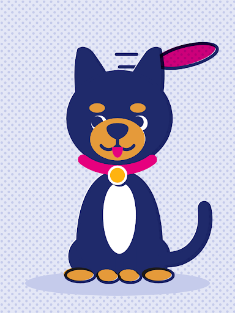
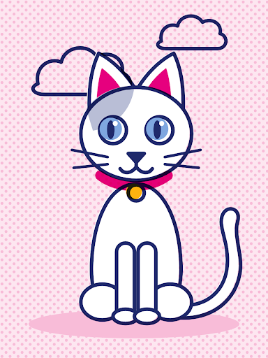

Tablero de Adopciones
2 requieren respuesta urgente
Solicitudes
17 solicitudes en curso · Tulancingo de Bravo, Hidalgo
search
Peludo:
expand_more
Nuevas
7
3

MAX
Carlos Vega
95% comp.hace 3h
9

KIRA
Elena Gómez
91% comp.hace 2d
3
MAX
Rodrigo Téllez
84% comp.hace 1d
En revisión
4
1

LUNA
Arturo Martínez
92% comp.hace 2 días
2

NUBE
Sofía Ramos
88% comp.hace 1d
Entrevista
2
1
LUNA
Mateo Lozano
94% comp.hace 3d
9
KIRA
Mariana Perea
90% comp.hace 4d
Visita
1
3
MAX
Gabriel Fuentes
96% comp.hace 5d
Aprobadas
3
2
NUBE
Laura Méndez
98% comp.hace 1 sem
1
LUNA
David Ortega
93% comp.hace 6d